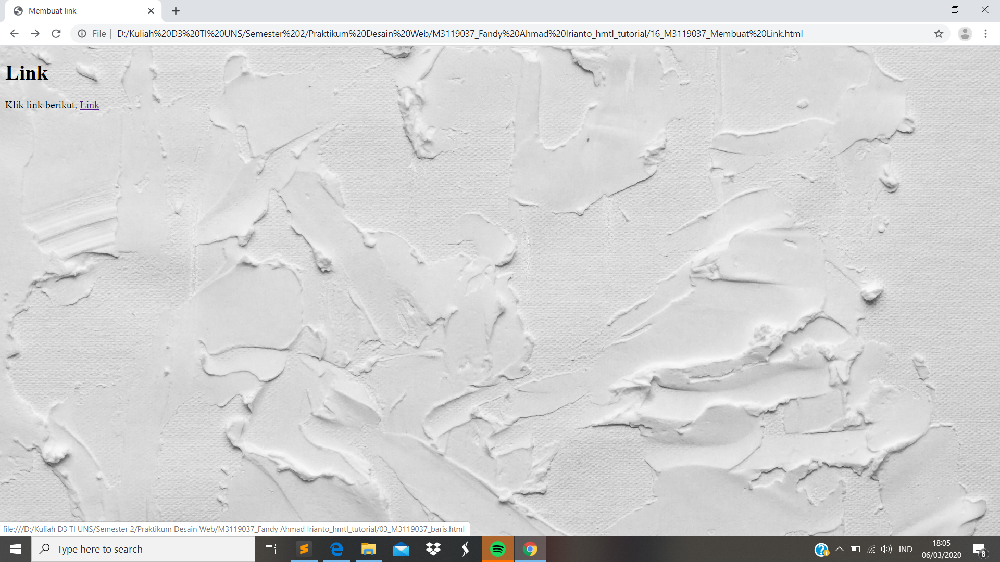

Membuat Link
//Link atau Hypertext merupakan pembuatan text yang nantinya apabila text tersebut diklik maka akan menuju ke laman lain. Perintah yang digunakan yaitu <a> dan diakhiri dengan </a>
Codingan
<!DOCTYPE html>
<html>
<head>
<meta charset="UTF-8">
<title> Membuat link </title>
</head>
<body style ="background:url(background.jpg); background-repeat: no-repeat; background-size: cover;">
<h1> Link </h1>
<p>
Klik link berikut,
<a href="03_M3119037_baris.html"> Link </a>
</p>
</body>
</html>
Tampilan Hasil Percobaan

Kesimpulan
Pada percobaan Hypertext atau membuat link ini kita dapat meletakkan laman yang akan kita tuju dengan menggunakan perintah <a>. Jika kita mengarahkan cursor pada link makan akan mendapatkan alamat dari link yang kita tuju berada pada satu folder.